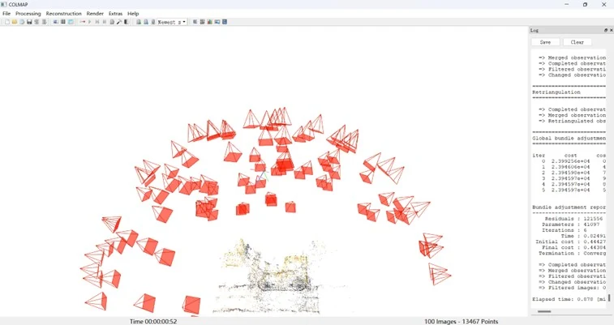
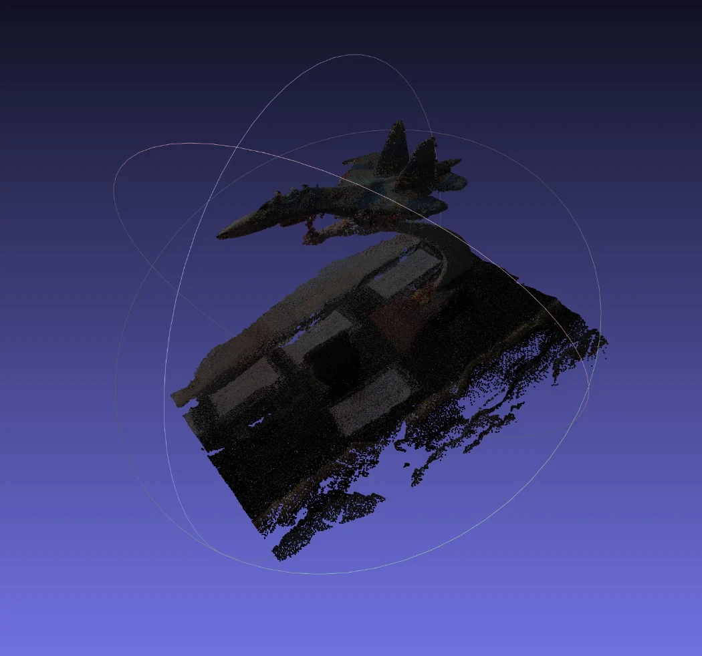
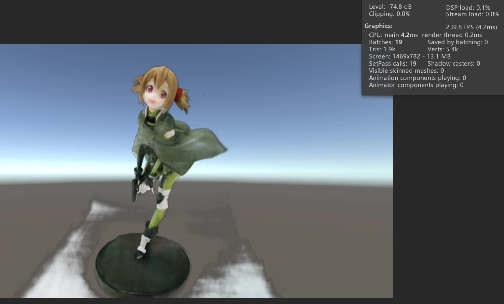
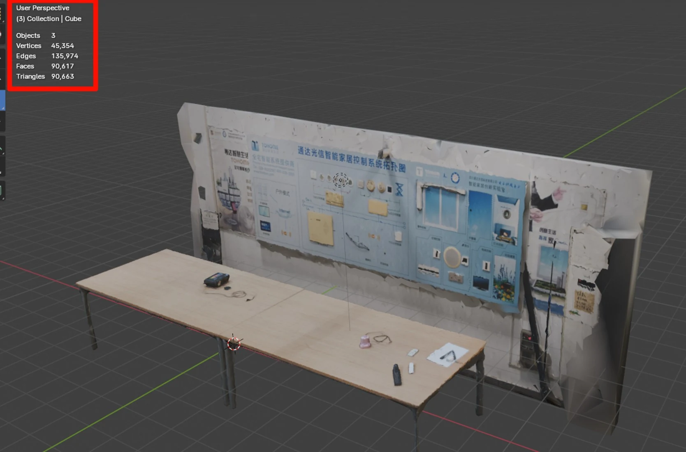
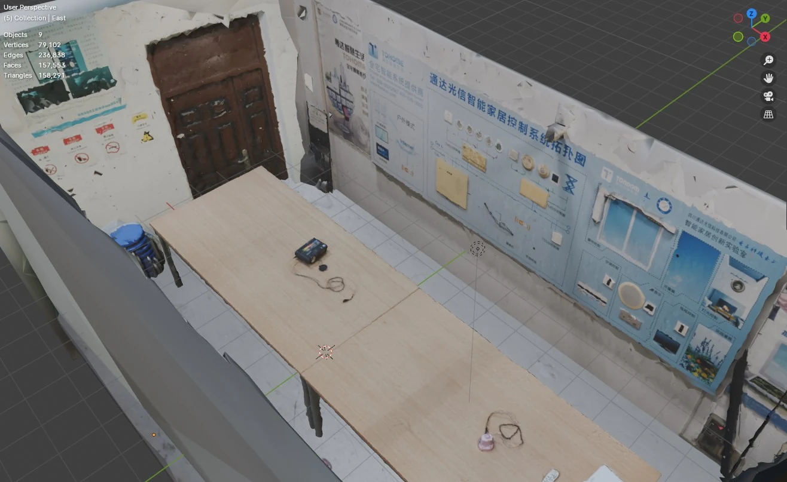
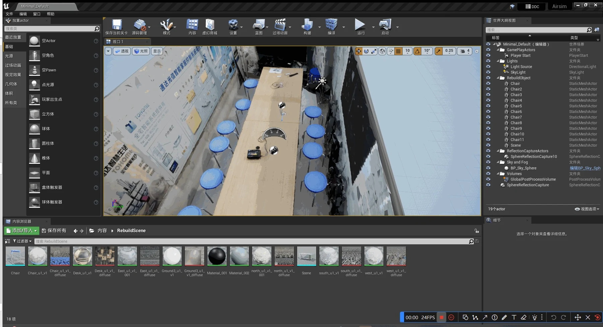

从图像到交互世界From images to interactive worlds.
贯穿三个阶段的课程实践：从照片采集与摄影测量，走向 NeRF 结果展示，再把重建资产带入仿真环境。

01三个阶段，逐步改变“重建成功”的标准
本科综设从大二开学持续到大三上学期末，核心协作为唐劭岩、王亦侯、杨朝。第一阶段关心照片能否形成稳定几何；第二阶段关心 NeRF 等表示怎样进入 Unity；第三阶段进一步要求资产能用于 UE／AirSim 仿真。这个过程把算法结果与交互系统的实际需求连接起来。
| 阶段 | 关注的问题 | 参与范围 |
|---|---|---|
| 前期研究 | 采集覆盖、图像质量与摄影测量管线 | 航拍／照片采集、waifu2x-caffe 预处理和部分优化 |
| NeRF / Unity | 从图像与位姿到可实时展示的表示 | 部分代码优化、Unity 展示与渲染适配、PLY 导入研究 |
| UE / AirSim | 把重建结果整理成能进入场景的资产 | 目标选择、会议室重建与资产处理；导航模块由组员负责 |
课设周期约为 2023.09—2025.01；按学期和三期答辩时间整理。
02SfM 与 MVS：先解决相机，再恢复表面
摄影测量首先需要具有足够重叠和视角变化的照片。SfM 通过图像特征匹配、几何约束与多视图优化估计相机位姿及稀疏点；MVS 在已有相机条件下进一步恢复稠密结构，再转为网格和纹理。前期研究结合 COLMAP 与 OpenMVS，后续在 Blender 中处理结果。


我参与采集和图像预处理，使用已有 waifu2x-caffe 工具改善输入，并随目标规模、遮挡和计算资源调整方案。增强后的照片仍需检查细节是否一致：视觉上更锐利，不自动等于几何上更可靠。
覆盖目标，检查模糊、遮挡和重复视角。
SfM 估计相机，MVS 生成更密集结构。
处理网格、纹理与引擎导入。
03NeRF：从显式表面转向辐射场
NeRF 用空间位置和观察方向描述密度与颜色，再沿相机射线进行体渲染。它与摄影测量网格的区别，不只是文件格式：渲染时如何查询场、如何积累颜色，以及运行成本怎样控制，都需要重新考虑。团队结合 COLMAP 位姿探索 NeRF／Instant-NGP 路线，训练与理论研究为协作内容。
沿射线累积颜色：密度 σ 决定该位置对光线的贡献，透射率 T 描述前面区域的遮挡。此处解释课程研究的方法基础。




Unity 端研究涉及 PLY、点云、体数据、Texture3D 与 ray marching。显式点集、网格和隐式场各自需要不同的导入与渲染路径；把训练结果保存下来，只完成了进入交互场景前的一部分工作。
04从 3DGS 尝试回到可落地的重建管线
第三阶段尝试过 3DGS／XVERSE，但在资源和效果约束下，最终转向 RealityCapture 摄影测量。3DGS 以带有位置、尺度、方向、透明度及颜色等参数的高斯表示场景；这里保留为课程接触与方案尝试，不将它写成独立实现的成熟重建系统。
我负责目标选择和会议室重建。将对象划分后分块处理，有利于逐段检查覆盖和失败位置；随后通过 Blender 清理、降面和整理资产，解决重建结果进入引擎前的几何与规模问题。




05引擎集成：展示之外，还有仿真需求


仿真使用者关心的不仅是某个观察角度好不好看，还包括场景比例、可穿行空间、模型复杂度，以及交互中是否暴露破面或缺失。重建流程因此需要保留资产整理环节，而不是在得到纹理模型时就结束。
我的工作
采集与输入处理、部分优化、Unity 展示适配、三期目标选择与场景重建。
协作与基础
NeRF 训练研究、仿真与导航等按团队分工推进；强化学习导航不计为本人在这一课设中的独立成果。
06从“用了什么方法”走向“为什么选它”
三个阶段最重要的变化，是学会把任务、数据和算力一起考虑。高质量外观、明确几何与实时交互不是同一个目标；方法选择要看最终使用方式，而不是只比较技术名称。
能够进入下一步工作流的结果，才是这个阶段真正可用的结果。
这些经历构成我对三维视觉的课程实践基础，包括 SfM／MVS、神经场、体数据和 3DGS 的接触与比较；公开描述保持在实际参与范围内。